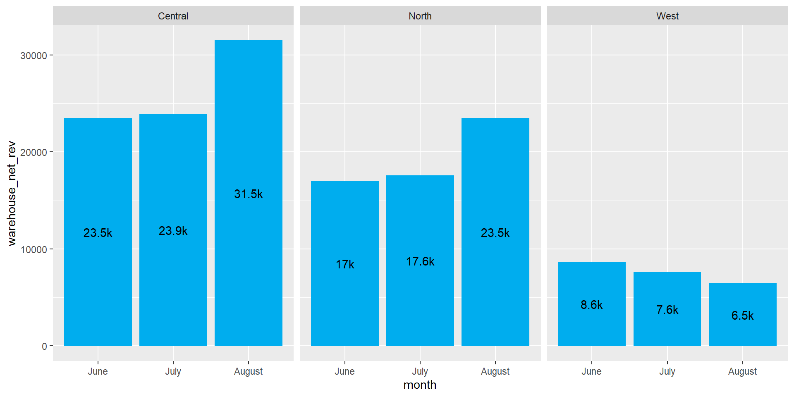
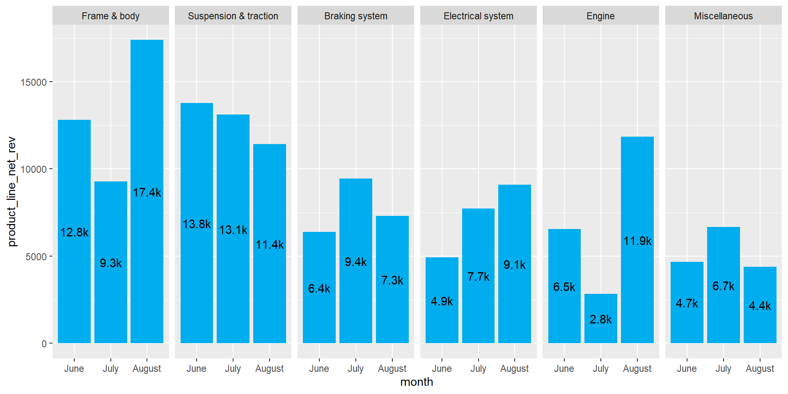

library(readxl)
library(tidyverse)
library(ggh4x)
library(trelliscopejs)Project Motoparts - Part 2 - R & TrelliscopeJS
Overview
In the previous exercise, I was tasked by the Motoparts board of directors to extract data from their Sales table. Specifically, they requested a table calculating net revenue for each product line and grouping results by month and warehouse. The results were then filtered so that only “Wholesale” orders were included.
While the data has been extracted in compliance with the requested format, I shared some concerns over the usefulness and readability of the data in its current format. To supplement the analysis conducted by the board of directors, I have committed to providing some additional plots and visualisations that may reveal otherwise hidden insights.
Loading our Dependencies & Extracted Data into R
Before we design and render our plots, let’s load all the necessary R packages that will be used in our analysis.
Now that we have our libraries loaded, let’s read in our csv from the previous exercise and check the output.
salesdata <- read_csv("revenue_by_product_line.csv")salesdata# A tibble: 48 × 4
product_line month warehouse net_revenue
<chr> <chr> <chr> <dbl>
1 Braking system August Central 3039.
2 Braking system August West 2501.
3 Braking system August North 1771.
4 Braking system July Central 3779.
5 Braking system July West 3061.
6 Braking system July North 2594.
7 Braking system June Central 3685.
8 Braking system June North 1488.
9 Braking system June West 1213.
10 Electrical system August North 4721.
# ℹ 38 more rowsSuccess. R has successfully loaded our extracted data into the object salesdata.
Factoring Months & Product Lines
Our object salesdata is currently storing product_line and month as a character type field. This will be a problem when we render our plots, as R will have no understanding on how to logically order these dimensions in a way that makes sense to the human eye.
Let’s manually factor our month column to establish the correct month hierarchy.
Then lets use the Forcats package (within the Tidyverse library) to factor our product_line column based on aggregated net_revenue.
salesdata$month <- factor(salesdata$month, levels = c("June", "July", "August"))
salesdata$product_line <- fct_reorder(salesdata$product_line, salesdata$net_revenue, .desc = TRUE)
salesdata# A tibble: 48 × 4
product_line month warehouse net_revenue
<fct> <fct> <chr> <dbl>
1 Braking system August Central 3039.
2 Braking system August West 2501.
3 Braking system August North 1771.
4 Braking system July Central 3779.
5 Braking system July West 3061.
6 Braking system July North 2594.
7 Braking system June Central 3685.
8 Braking system June North 1488.
9 Braking system June West 1213.
10 Electrical system August North 4721.
# ℹ 38 more rowsSuccess. Note that product_line and month are stored in a <fctr> type field now.
Plotting Aggregated Warehouse Performance by Month
With our logical hierarchies in place, and our custom compact metric, it’s time to start building our plots.
Let’s start with a bar chart displaying individual warehouse performance by month.
warehousedata <- salesdata %>%
select(warehouse, month, net_revenue) %>%
group_by(warehouse, month) %>%
summarize(warehouse_net_rev = sum(net_revenue)) %>%
mutate(warehousecompactnetrev = paste(as.character(round(warehouse_net_rev/1000, digits = 1)),"k", sep=""))ggplot(warehousedata, aes(x = month, y = warehouse_net_rev))+
geom_bar(fill = "#00ADEE", position="stack", stat="identity")+
geom_text(aes(label = warehousecompactnetrev), stat = 'summary', fun = 'sum', position = position_stack(vjust = 0.5))+
facet_wrap(~ warehouse, ncol=3)
Wow! Immediately we have identified that the Central and North warehouses demonstrate sustained improvement, while West appears to be declining month-on-month.
Plotting Aggregated Product Line Performance by Month
Let’s look at another dimension: product_line, and see what kind of insights we can reveal for the Motoparts Board of Directors.
productlinedata <- salesdata %>%
select(product_line, month, net_revenue) %>%
group_by(product_line, month) %>%
summarize(product_line_net_rev = sum(net_revenue)) %>%
mutate(productlinecompactnetrev = paste(as.character(round(product_line_net_rev/1000, digits = 1)),"k", sep=""))ggplot(productlinedata, aes(x = month, y = product_line_net_rev))+
geom_bar(fill = "#00ADEE", position="stack", stat="identity")+
geom_text(aes(label = productlinecompactnetrev), stat = 'summary', fun = 'sum', position = position_stack(vjust = 0.5))+
facet_wrap(~ product_line, ncol=6)
Interesting. We can observe that ‘Frame & Body’ and ‘Suspension & Traction’ are high performing product lines. The Motoparts team may wish to explore the factors contributing to growth in Electical System sales, and sustained decline in Suspension & Traction sales.
Plotting Nested Product Line Performance by Warehouse and Month using TrelliscopeJS
Let’s revisit the original objective set out by the Motoparts board of directors:
‘…they want to gain a better understanding of wholesale revenue by product line, and how this varies month-to-month and across warehouses.’
To effectively visualise sales performance broken into 3 nested dimensions, I will be enlisting the TrelliscopeJS package to render an interactive and customisable plot window.
The viewer will be able to resize, reorder and filter out plots at their convenience depending on their area of focus. Most importantly they will be able to compare product line performance over time by warehouse as originally requested.
salesdata <- salesdata %>%
select(product_line, month, warehouse, net_revenue) %>%
mutate(compactnetrev = paste(as.character(round(net_revenue/1000, digits = 1)),"k", sep=""))
ggplot(salesdata, aes(x = month, y = net_revenue, label = compactnetrev))+
geom_col(fill = "#00ADEE")+
geom_hline(aes(yintercept = mean(net_revenue)), linetype = "dashed", alpha = 0.4) +
geom_text(size = 3, position = position_stack(vjust = 0.5))+
facet_nested_wrap( ~ product_line + warehouse, nrow = 4, ncol = 6)+
facet_trelliscope(~product_line,
path = "salesdatatrelliscope",
nrow = 2,
ncol = 3,
state = list(labels = list("product_line","net_revenue_mean"), sort = list(sort_spec("net_revenue_mean", dir = "desc"))))using data from the first layer